Context
C6 Bank is a Brazilian digital bank founded in 2018 with the mission of being a complete solution for personal and businesses financial services.
During one year and a half working at the bank I had the opportunity to work on several projects and lead part of the Design team, participating in operational, technical and strategic decisions within the team.
Some of the projects I collaborated on:
- Business accounts (Web platform)
- Payments and transfers for business accounts
- Credit cards for business accounts
- Internal tools
- Web site
- Design System and Design Operations
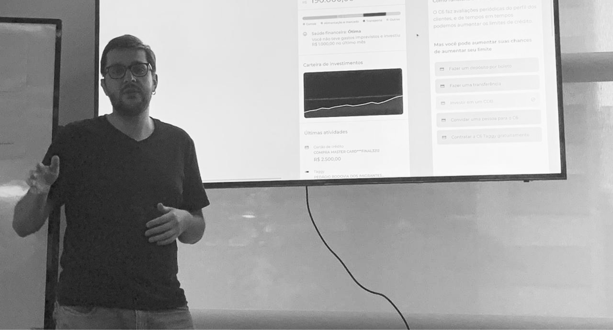
Web banking for business accounts
In the beginning, business accounts could be accessed and managed by an exclusive web-based application. The main mission was to launch the first products in a scalable way, thinking about the implementation of a wide range of products and features that would grow in complexity to serve small, medium and large companies.
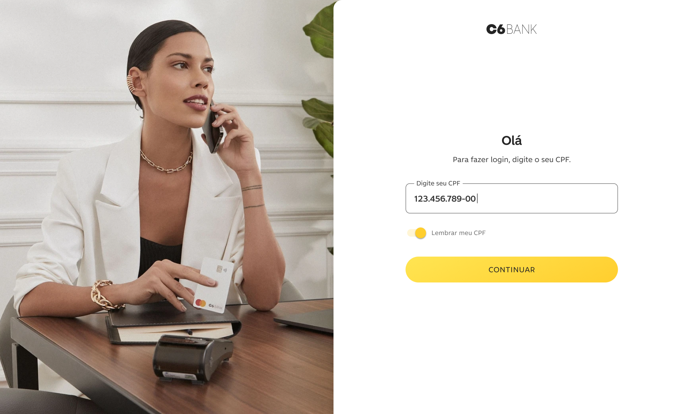
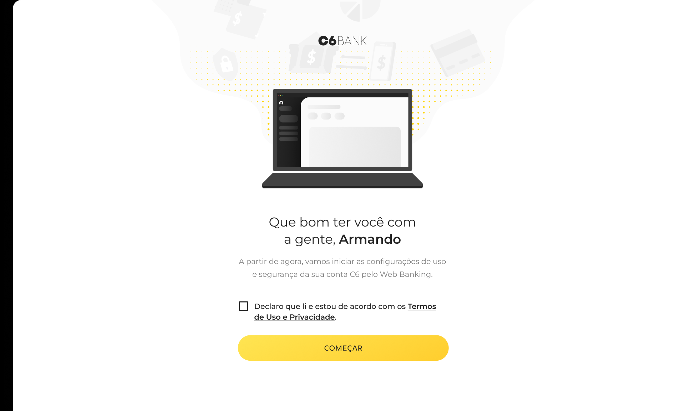
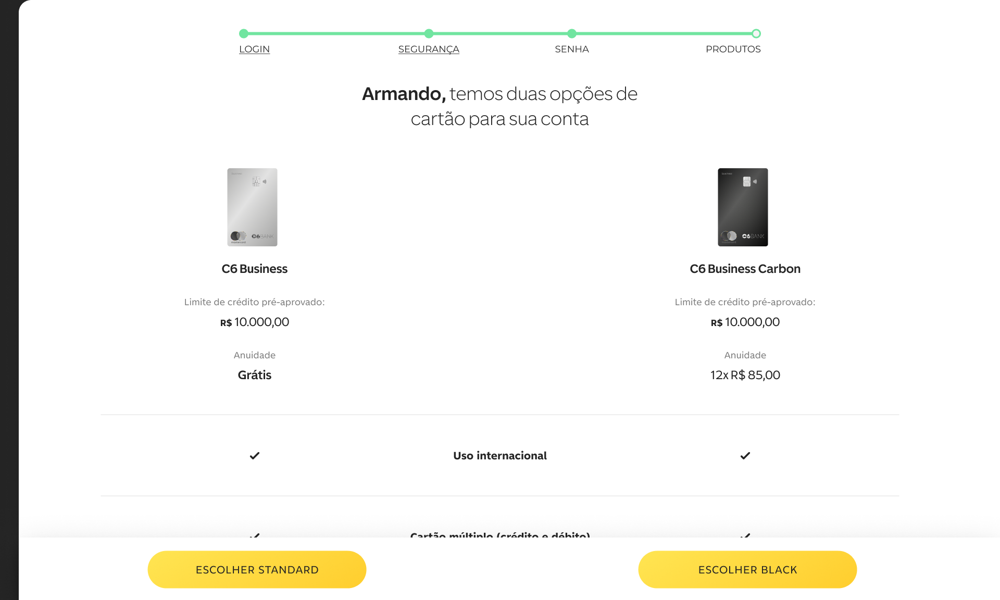
Design process
C6 has a great ability to deliver products quickly respecting a complete design process. With strong discovery and understanding phases and a great alignment between all stakeholders — made possible only by proximity and collaboration — the solutions are implemented balancing business goals and users needs.
A very common deliverable that democratised the understanding of products within the teams were the detailed flowcharts and wireflows, which showed decisions in technology, business, design and other areas. It was a foundational tool for product iteration debates.
As a result, the bank's growth is considered the fastest in its segment. While working at the bank reached the mark of 4 million customers in less than 2 years of operation.
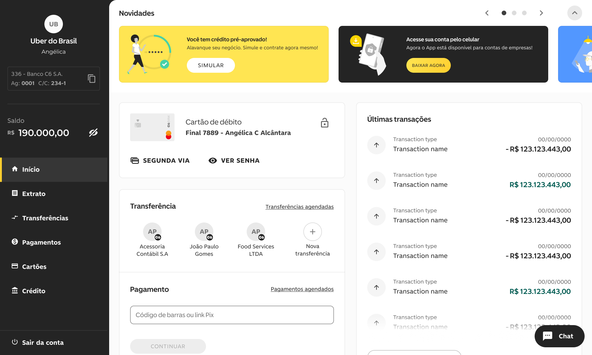
Loans
After launching basic accounts solutions, loans would be the first product that could be hired after the account set-up. The project included a hiring funnel and a management dashboard.
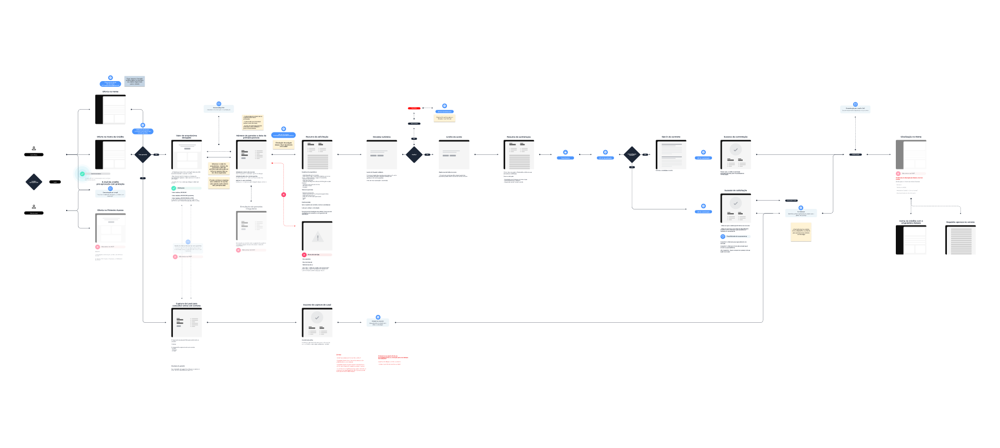
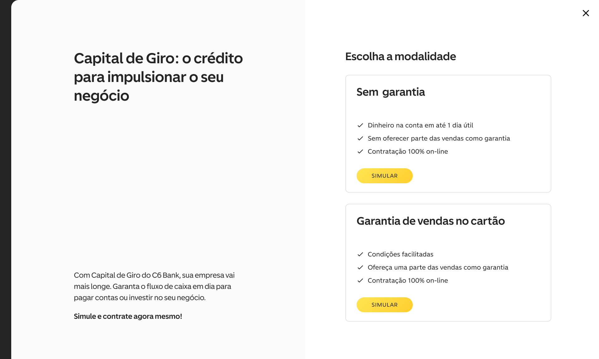
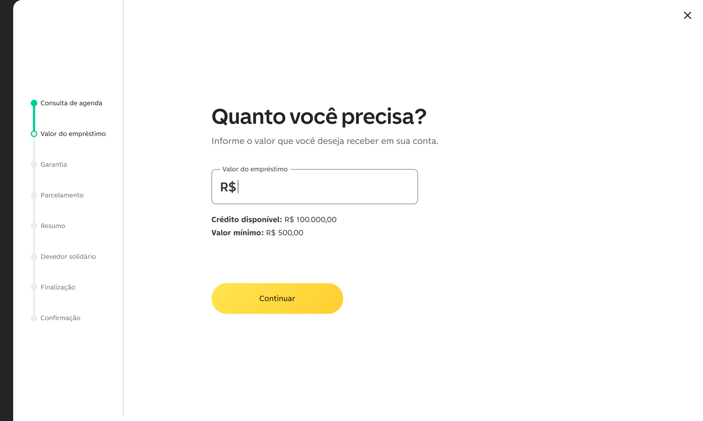
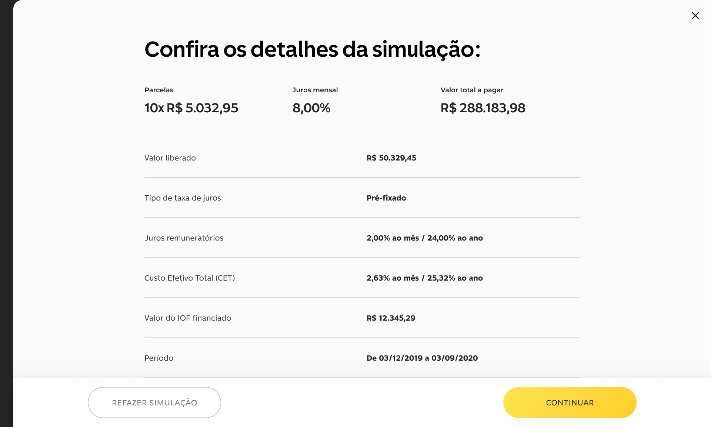
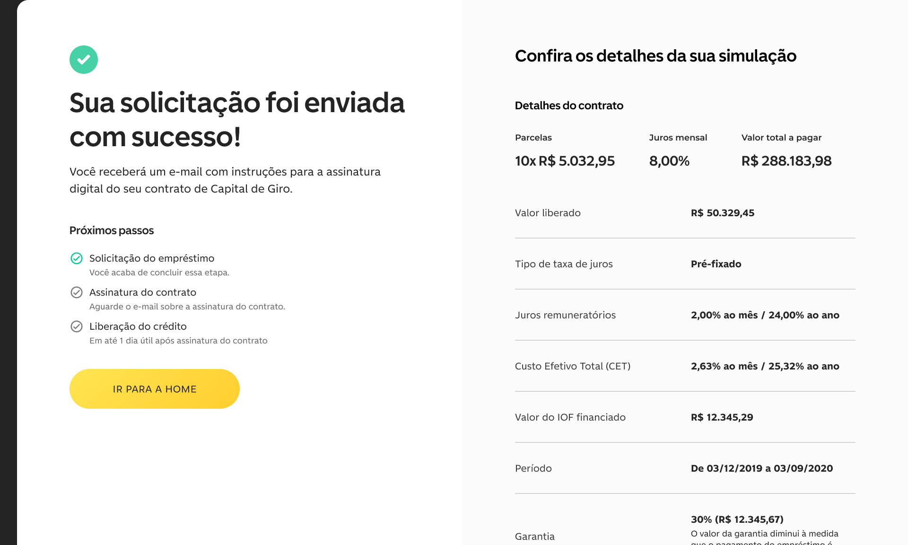
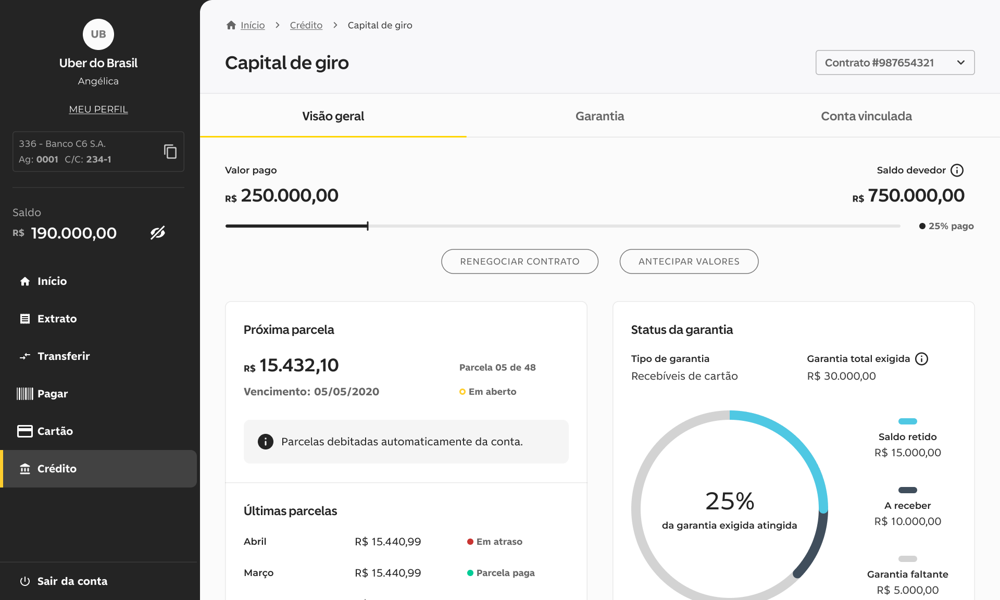
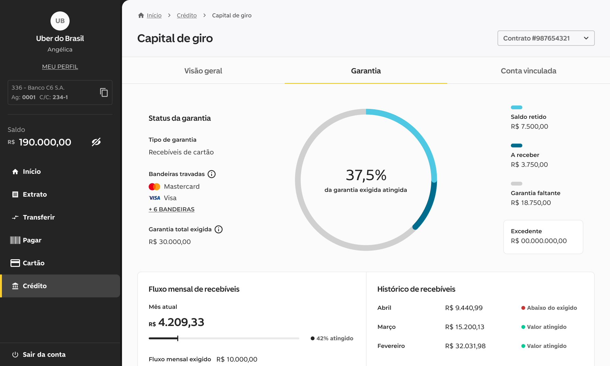
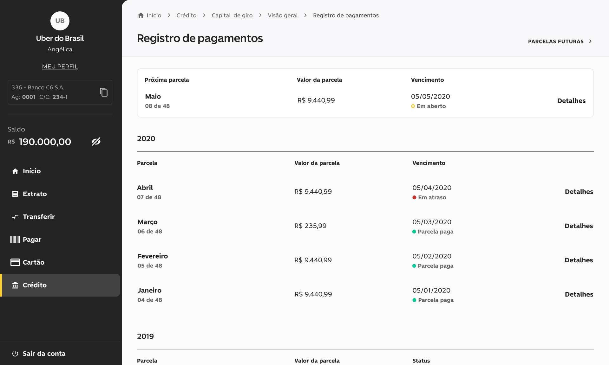
Design System at C6 Bank
The Design System and Design processes have always been much discussed subjects within the bank. After the creation of a solid brand and launching of the first products (before I joined the team), it would be crucial that the creative teams were aligned for a organised operational growth.
So, over time, dedicated people were allocated to take care of the expansion and maintenance of the Design System and oversee the design team's operational processes and needs.
For about a year I had the opportunity to actively collaborate with the management and maintenance of the component library for the web platform, orchestrate the creation and review of visual and interaction patterns and coordinate the implementation of the bank's new proprietary typography across all platform and products.
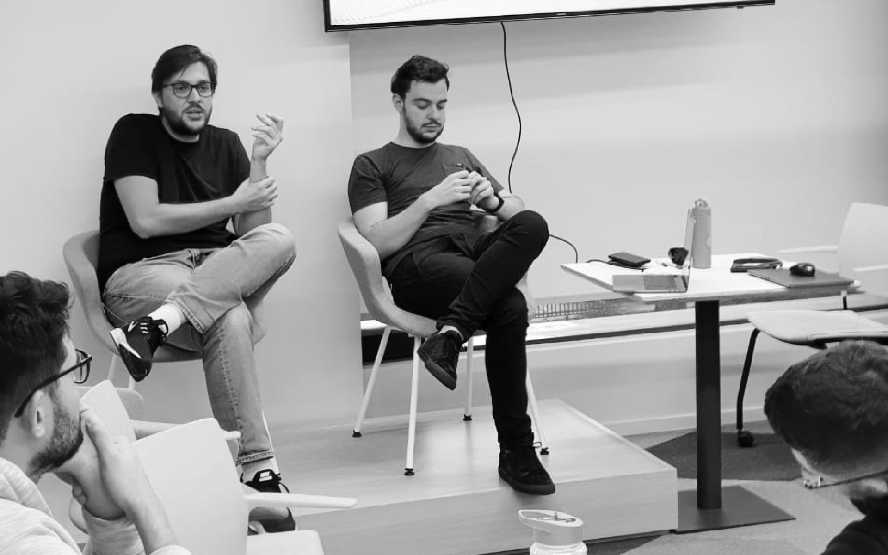
Final considerations
Working at C6 Bank was a great opportunity to deepen my knowledge of complex product creation processes. I started to see the Design discipline in a more integrated way with other areas of a company by being closer to a holistic view of the business.
The main takeaway of this journey was that it is possible to build great products that impact businesses and people's lives using mainly Design foundational knowledge, putting more effort in achieving a good information architecture, respecting gestalt and heuristic principles and making the conversation between users and interface more fluid and human. And that's only possible with a team thinking together and getting deeper in the problems and possible solutions.